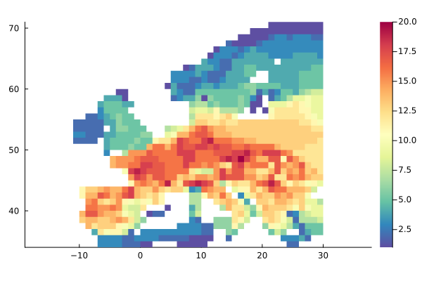
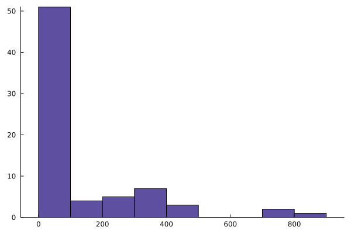
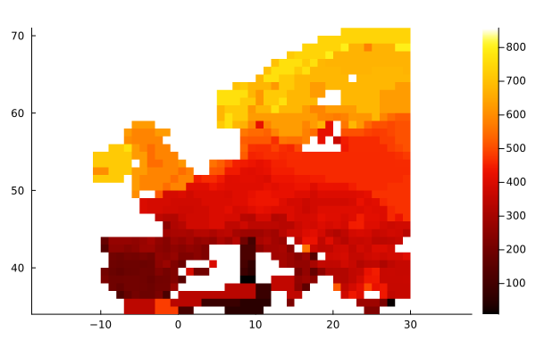
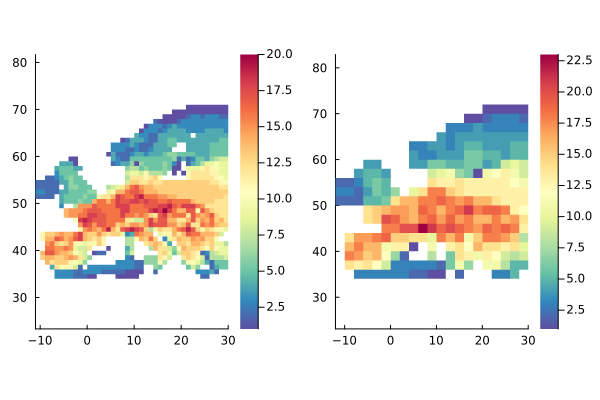
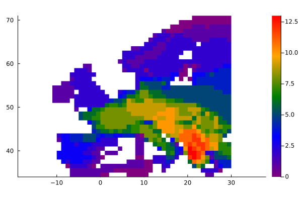

Getting started:
The aim of SpatialEcology is to make it easy to input species occurrence data, along with species traits and site attributes, and do most analyses intuitively and simply.
For this example we'll use a dataset of the distributions of all amphibians in Europe, based on a (previous) rasterization of IUCN's amphibian shapefile data onto a 0.5x0.5 lat-long grid (provided with the package).
First, let's load the relevant libraries
using SpatialEcology, Plots, CSV, DataFrames, Statistics"nul"Species occurrence data for spatial ecological analysis exists in a variety of different formats. A common format is to have the data in one or several CSV files. In this case we have a single CSV file where each row is a grid cell. The first three columns are the name and lat/long coordinates of the grid cell, whereas the remaining columns encode the species occurrences - each column is a species, and a 1 indicates that a species occurs in a given grid cell.
amphdata = CSV.read(joinpath(dirname(pathof(SpatialEcology)), "..", "data", "amph_Europe.csv"), DataFrame);
amphdata[1:3,1:6]| Row | Long | Lat | coords | Salamandra_salamandra | _Calotriton_asper | _Calotriton_arnoldi |
|---|---|---|---|---|---|---|
| Float64 | Float64 | String15 | Int64 | Int64 | Int64 | |
| 1 | 17.5 | 46.5 | 17.5_46.5 | 1 | 0 | 0 |
| 2 | 17.5 | 47.5 | 17.5_47.5 | 1 | 0 | 0 |
| 3 | 24.5 | 37.5 | 24.5_37.5 | 1 | 0 | 0 |
We split the DataFrame into two: the coordinates (the first three columns) and the presence-absence matrix (the remaining colums). We can then use two objects to create an Assemblage object. There are many constructor methods for Assemblage, making it easy to create the object no matter how your input data are organized.
Presence-absence matrices can have the sites either as columns or as rows. The sitecolumns keyword tells SpatialEcology that the input DataFrame has sites as rows (and species as columns)
amph = Assemblage(amphdata[!, 4:end],amphdata[!, 1:3], sitecolumns = false)Assemblage with 73 species in 1010 sites
Species names:
Salamandra_salamandra, _Calotriton_asper, _Calotriton_arnoldi...Chioglossa_lusitanica, Pleurodeles_waltl
Site names:
1, 2, 3...1009, 1010
Plotting recipes are defined for Assemblage objects - if we just plot the object to get a richness map
plot(amph)
Accessing and adding data:
Access functions summarize the data, such as occupancy, richness, nsites, nspecies
mean(occupancy(amph))125.15068493150685Add DataFrames or Vectors of data to the assemblage, DataFrames are automatically aligned keeping everything together. Access data by column name.
addtraits!(amph, occupancy(amph), :rangesize)
histogram(amph[:rangesize], grid = false, legend = false)
Easy subsetting and quick views:
It is easy to do analyses by taking subsets of the objects and analyzing on them - i.e. the split-apply-combine strategy. Let's say we want to get the mean range of all species occurring in each grid cell. We can map over all sites in the assemblage, and for each site use occurring to extract the indexes of the species that occur in that site. Finally we can use this to index into the rangesize column we added to the dataframe above, and take the mean. A plot recipe allows us to create a heatmap for any numeric vector of values that match the sites in the Assemblage object.
meanrange = map(site->mean(amph[:rangesize][occurring(amph,site)]), 1:nsites(amph))
plot(meanrange, amph, color = :fire)
The subsetting is fast as it uses views by default and allocate very little. You can also use view explicitly to get a handle on a subset of an Assemblage, subsetting by either a vector of species (to get a smaller taxonomic group) or a vector of sites (to get a smaller geographic area). Here we get the names of all species in the genus Triturus and use this to create a view that acts as a smaller Assemblage for this species alone.
triturus = view(amph, species = contains.(speciesnames(amph), "Triturus"))SubAssemblage with 6 species in 1010 sites
Species names:
_Triturus_marmoratus, _Triturus_pygmaeus, _Triturus_cristatus..._Triturus_karelinii_nonspl, _Triturus_dobrogicus
Site names:
1, 2, 3...1009, 1010
We can then use this dataset for further analyses - here getting the latitudinal range for the genus in Europe:
extrema(coordinates(triturus)[:,1])(-10.5, 29.5)Aggregation and other operations
For gridded Assemblages, you can also do some simple geographic operations on the object, such as coarsening the grid to a coarser grain size with coarsen. Here, we lump them to a 2 times coarser grain
amp2 = coarsen(amph, 2)
default(color = cgrad(:Spectral, rev = true))
plot(plot(amph), plot(amp2))
There are currently a few extra less generic operations defined on Assemblages, that may at some point be moved to a different module. For example, you can generate the "dispersion field" of a given site using the dispersionfield function. A dispersion field of a site is a map of the total richness of all species occurring in a given site Graves & Rahbek 2005 PNAS. This illustrates the compositional similarity of the site to it's surrounding sites. Here we plot the dispersion field for site number 50.
plot(dispersionfield(amph, 50), amph, c = :rainbow)
This functionality of the SpatialEcology package was used for the analyses in Borregaard, Graves & Rahbek, 2020.